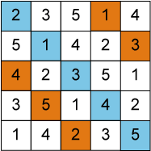

| ホーム | プログラム例 | ドキュメント | 高度な使い方 | チュートリアル | アプリケーション |
このページではSAT型システムのためのツール (SAT型制約プログラミングシステム) Scarab について説明します．Scarab の特長は以下になります:

import jp.kobe_u.scarab._ ; import dsl._ var n: Int = 5 for (i <- 1 to n; j <- 1 to n) int('x(i,j),1,n) for (i <- 1 to n) { add(alldiff((1 to n).map(j => 'x(i,j)))) add(alldiff((1 to n).map(j => 'x(j,i)))) add(alldiff((1 to n).map(j => 'x(j,(i+j-1)%n+1)))) add(alldiff((1 to n).map(j => 'x(j,(i+(j-1)*(n-1))%n+1))))} if (find) println(solution.intMap)
scala -cp scarab<$version>.jar pls.sc
Created: 2019-02-11 月 14:33